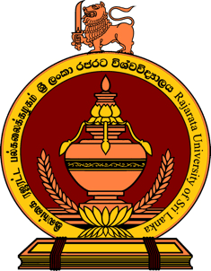

RAJARATA UNIVERSITY OF SRI LANKA

HISTORY OF RAJARATA UNIVERSITY
- 1995: Established as the Rajarata University of Sri Lanka by a Gazette Extraordinary notification.
- 1996: Formally inaugurated by combining Affiliated University Colleges in North Central Province.
- 2006: Established the Faculty of Medicine and Allied Sciences at Saliyapura.
- 2017: Expanded further by establishing the Faculty of Technology.
AVAILABLE FACULTIES
- Faculty of Agriculture – කෘෂිකර්ම පීඨය
- Faculty of Applied Sciences – අනුප්රයුක්ත විද්යා පීඨය
- Faculty of Management Studies – කළමනාකරණ අධ්යයන පීඨය
- Faculty of Medicine and Allied Sciences – වෛද්ය හා සමසෞඛ්ය විද්යා පීඨය
- Faculty of Social Sciences and Humanities – සමාජීය විද්යා හා මානවශාස්ත්ර පීඨය
- Faculty of Technology – තාක්ෂණවේද පීඨය
- Faculty of Graduate Studies – පශ්චාත් උපාධි අධ්යයන පීඨය
GO TO OFFICIAL WEBSITE OF RAJARATA UNIVERSITY
GO TO HOME PAGE